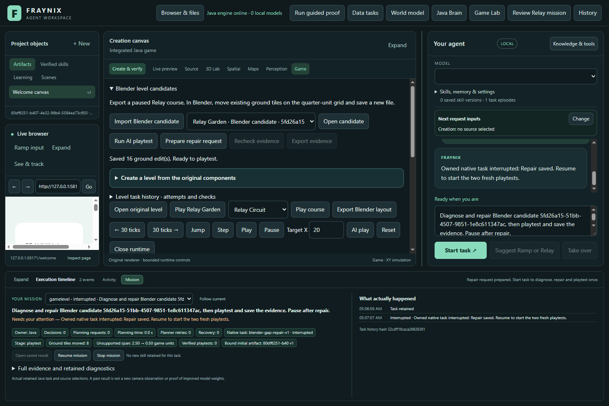
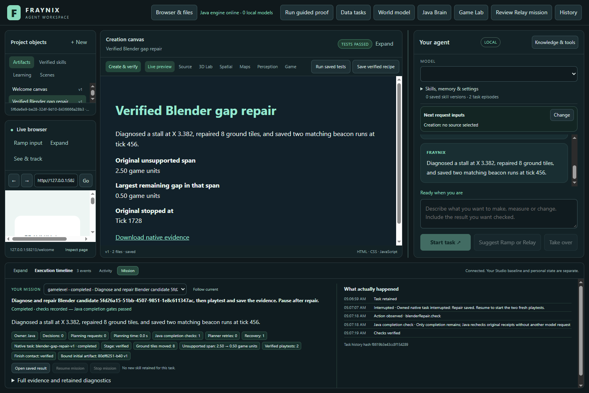
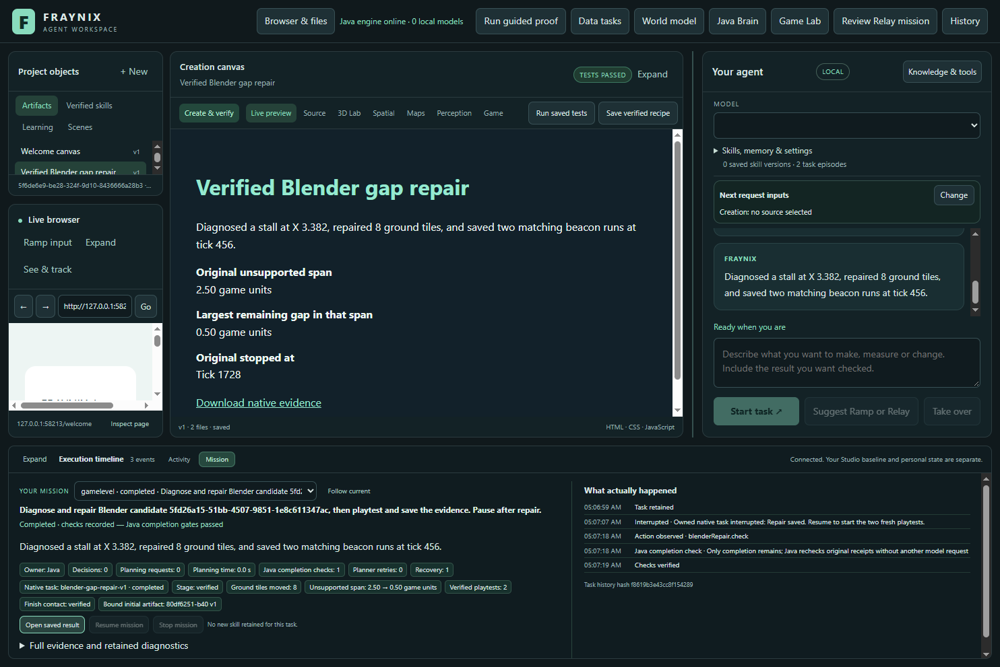

Diagnose, repair and verify a Blender level in one Chat request
One durable Chat request runs the original Blender level, diagnoses the failed movement, repairs a separate candidate and saves two verified native playtests.

The same Chat request retains its diagnosis and repaired candidate before restart

Mission shows the checked native result

The actual browser-checked repair report and evidence link
System files
Open source